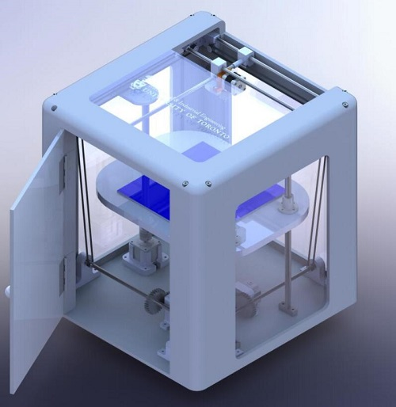

Projects
Pathage (C++)
LEGO Morse Code Decoder (Assembly)
2048 (Verilog)
3D Printer (SoildWorks)
Beltline Trail
THIS PAGE IS NOT READY
Pathage (C++)
↪ A geographic information system using the data of OpenStreetMap
- Capable with 19 cities/regions
- Displays the features, streets and points of interests
- Intuitive and clear user interface
- Can find the shortest path between two places and display the directions
★ Algorithms used:
☆ A* for finding the shortest path
☆ Greedy, Selection Swap, Pair Swap, 2 Opt for a more complex pathfinder problem
(given pairs of pick-up and drop-off points, needed to pick-up something before drop-off it,
had to start and end with any of the depots)
LEGO Morse Code Decoder (Assembly)
↪ A morse code decoder constructed by Nios-II architecture, LEGO pieces, a motor and light sensors
- Uses gears and motor to automatically scroll the paper sheet
- Reads the dots and dashes on the paper sheet using light sensors
- Plays sounds with different lengths while reading dots and dashes
- Transforms the morse code into hex number, and prints the result on screen
2048 (Verilog)
↪ A 2048 game generated by DE1-SoC board, a keyboard and a monitor
- Uses the keyboard as the input
- Displays the game on the monitor
- Can choose to display the game in random colors
3D Printer (SoildWorks)
↪ A entry-level professional 3D printer used in print farms
- Designed to be cost-effective
- Created each part in SoildWorks
Outcome Preview:
Beltline Trail
↪ A solution to a dangerous segment of the Beltline Trail in Toronto
- Worked with our client: an environmental specialist from City of Toronto
- Improved the segment's safety and accessibility, reduced the potential danger from various aspects
- Presented to the client